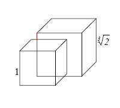

Podwojenie Sześcianu
Inaczej problem Delijski, jest jednym z trzech wielkich problemów starożytnej grecji obok kwadratury koła i trysekcji kąta.
Polega on na zbudowaniu sześcianu o objętości dwa razy większej niż dany sześcian.
Legenda głosi, że podczas zrazy na Delos wyrocznia delficka przekazała proroctwo Apollina, że choroba ustanie, gdy jego ołtarz w Delfach zostanie powiększony dwukrotnie Zrozumiano to w ten sposób, że należy powiększyć objętość ołtarzu 2 razy, pozostawiając jego kształt sześcianu
Klasyczne podejście używając cyrkla i linijki jest niemożliwe do wykonania ponieważ musimy odmierzyć odcinek o pierwiastek trzeciego stopnia większy od długosci krawędzi danego sześcianu
